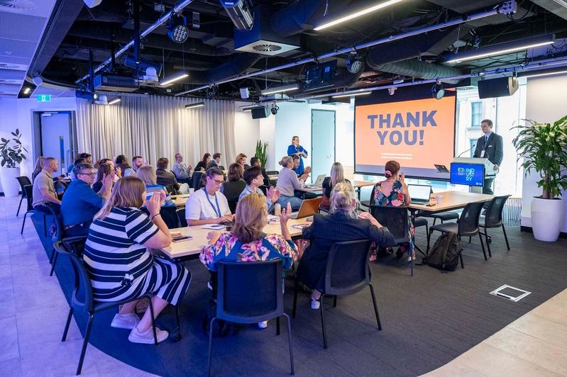
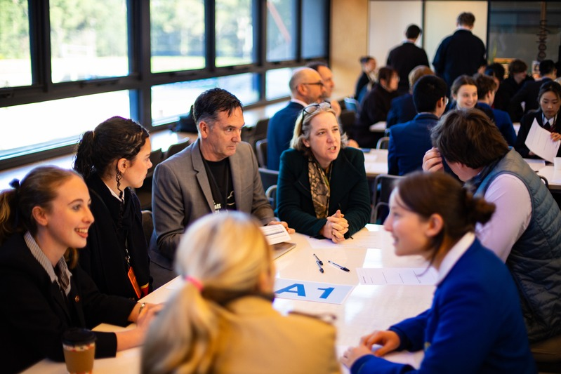
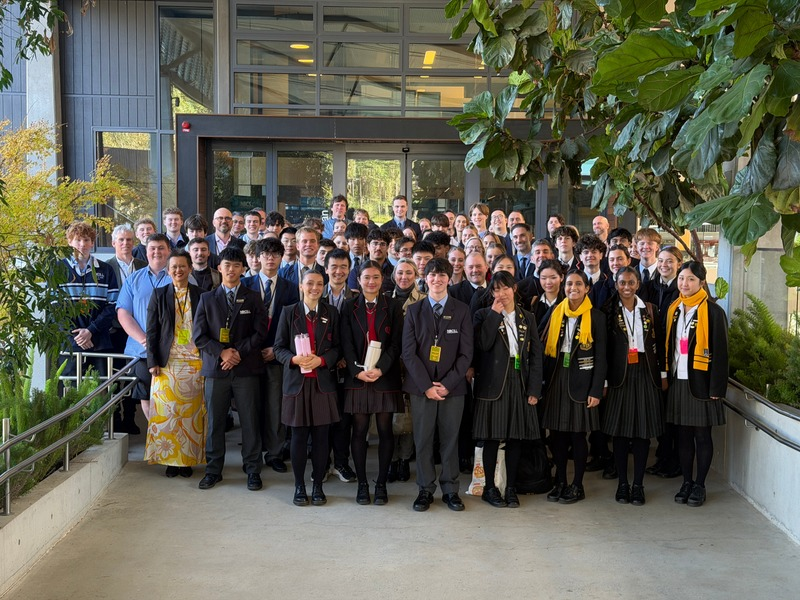
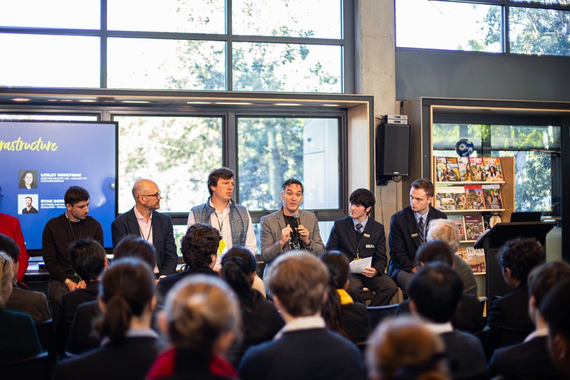
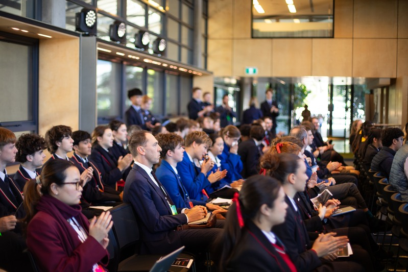

Changing the future of education - for a better tomorrow - today.
Released July 2026
...believe that the rapid advancements in generative artificial intelligence will fundamentally change how we learn, work and live.
This letter draws on the findings of three key initiatives:
An international and national student survey, examining how students across Australia and abroad are engaging with AI.
A student-led session at the E3 (Entrepreneurial Educators Exchange) Unconference in Sydney.
The NBCS (Northern Beaches Christian School) Summit on 'The Impacts of AI on Young People'.
To get in touch, contact we.the.students.ai@gmail.com





Collected data and opinions strongly suggest that the bans on AI systems at schools are ineffective in curbing misuse and make it more challenging for students to ethically obtain AI skills and literacy, a skill that is of utmost importance in the current workforce and will further increase in importance over the coming years, as per the industry experts.
Educators unanimously agreed that AI detection in text-based work is poor and “a waste of money”. This is the case because AI systems are trained on human data and thus produce human outputs, which can lead to false detection. Additionally, it substantially deteriorates the student-teacher relationship, which has a significant impact on learning.
The data below reveals that teachers are trying to get students to use AI, yet students do not feel they are properly educated.
Global surveying efforts revealed that the challenges of AI in education are universal across Australia, New Zealand, Asia, North America, Europe and Africa.
In a workforce where AI is becoming ever more dominant, summit participants agreed on key Human skills which will remain important in an AI-driven workforce:
Educators are clear on the fact that they could significantly improve the education of their students if they themselves had more resources to learn, demonstrate and harness AI.
AI provides a unique opportunity to improve the education of students who have fallen behind or are ahead.
Danny Liu, Hannes Ennemann, Jedd De Gouveia, Ophelia Morgan, Madeleine O'Connor, Oliver Williams, Aden Wong, Mitchell Hedger, Sam Husband, Mitchell Perry, Cate Whitaker, Jack Kleemeyer, Ella Leone, Joshua Young, Liz Delevaux, Drew Dickson, Ben Carlisle, Charlotte Davies.
Prof. Robert Tai, Dr Jack Muir, Victor Rodrigues, Max Tennant, Lesley Honeyman, Ryan Dorrington, Emma Collins, Dr Rachel Perry, Jason Liu, Beryl Truong, Margaret O'Brien, Andrew Williams, Guy Treves, Lewis Evans, Tim Watson.
Rick Dufourq, Mark Liddell, Annika Williams, Adam Demasi, Kate Lee, Patrice Marchbank, Dr Alison Gates, Jonathan Adams, Graham Baike.
Pip Walker, Jacqui Scruby MP, Michael Regan MP, Briseida Tran.
Oliver Langston, Jimmy Montgomery, Alec Barwell, Sienna Crompton, Gemma Berry, Jasper Lowe, Aidan Kempen, Zac Ottery, Lucas Toms, Arabella Kuras, Asher McNeil, Charlie Hume, Gemma Zietsman, Stephanie Liu, Aysha Hogan, Sophie Steele, Ella Spedding, Archie King, Sienna Berry, Neil Kongot, Elsa Johnston, Hal Cassisi-Nichols, Felix Zhou, James Kollo, Flynn Greenow, Alan Wu, Daniel Nazra, Hannes Liu, Lewis Christie, Sean Xin, Elliott Storer, Fin Moore, Mahan Jagtiani, Charlotte Chang, Laura Hou, Dineli Jayasekara, Abigail Li, Annalise Low, Ruby Brooks, Emma Lugtenburg, Shiloh McGlone, Matilda Altschwager, Florence Hawks, Olivia Chow, Shreya Gupta, Briar Qiu, Casey Byrne, Tristan Kaaeber, Kairos Bech.
Signed in support of this letter.
We The Students is an international student-led initiative. If you're an educator, policymaker, researcher or student who wants to help shape how AI is used in learning, we'd like to hear from you.
We The Students · An international student-led initiative